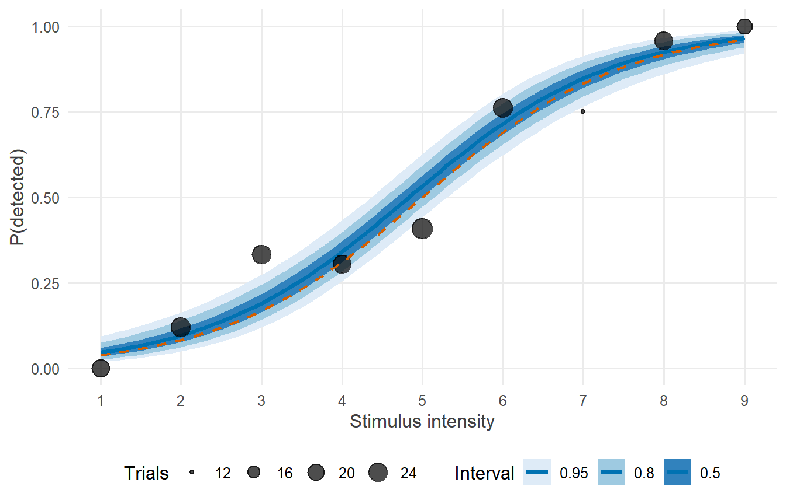
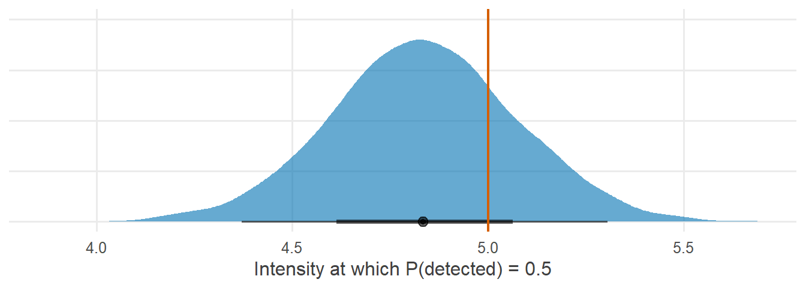
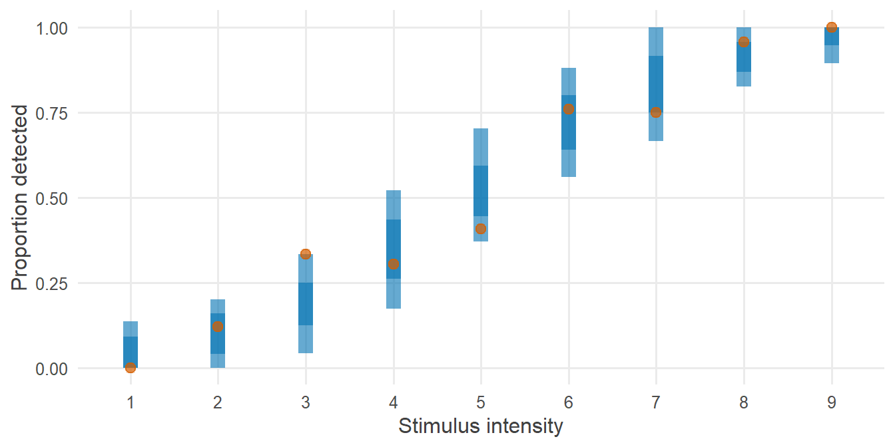

library(tidyverse)
library(cmdstanr)
library(posterior)
library(tidybayes)
source("R/theme.R")
source("R/utils.R")第 7 章 Logistic：只换似然
从线性回归到 logistic 回归，只需要换掉似然和链接函数。为什么用 bernoulli_logit？系数该怎么解释？
结果变量是 0/1 的情形在研究中随处可见：被试是否察觉到刺激、学生是否通过考试、患者是否康复。这时线性回归不再合适：它预测的“概率”可能小于 0 或大于 1。
好消息是，从线性回归走到 logistic 回归，Stan 程序只需要改动很少几行。本章把这几行讲透，并回答 logistic 回归中最让人困惑的问题：系数到底是什么意思？
1 本章要回答的问题
- 为什么从线性回归到 logistic 回归，只需要换似然和链接函数？
bernoulli_logit为什么比先算概率再用bernoulli更好？- 系数在 logit 尺度上应该怎样解释？怎样换算成研究者关心的量？
2 公式卡片
Logistic 回归
\[ \begin{aligned} y_i &\sim \operatorname{Bernoulli}(p_i) \\ \operatorname{logit}(p_i) &= \alpha + \beta\, x_i \\[4pt] \alpha &\sim \operatorname{Normal}(0,\ 1.5) \\ \beta &\sim \operatorname{Normal}(0,\ 1) \end{aligned} \]
其中 \(\operatorname{logit}(p) = \log\dfrac{p}{1-p}\)，其反函数为 \(\operatorname{logit}^{-1}(\eta) = \dfrac{1}{1 + e^{-\eta}}\)。
把它和第 5 章的线性回归放在一起看：
| 组成部分 | 线性回归 | Logistic 回归 |
|---|---|---|
| 线性预测 | \(\eta_i = \alpha + \beta x_i\) | \(\eta_i = \alpha + \beta x_i\)（不变） |
| 链接函数 | 恒等：\(\mu_i = \eta_i\) | logit：\(p_i = \operatorname{logit}^{-1}(\eta_i)\) |
| 似然 | \(\operatorname{Normal}(\mu_i, \sigma)\) | \(\operatorname{Bernoulli}(p_i)\) |
| 额外参数 | \(\sigma\) | 无 |
线性预测部分原封不动。变化的只有两处：结果变量服从什么分布，以及线性预测怎样映射到这个分布的参数上。这就是广义线性模型的结构。
先验为什么选 \(\operatorname{Normal}(0, 1.5)\) 和 \(\operatorname{Normal}(0, 1)\)，而不是看上去更“无信息”的 \(\operatorname{Normal}(0, 10)\)？这是第 8 章的主题。
3 模拟数据
研究情境：一项心理物理学实验中，被试在 200 个试次里判断是否察觉到一个微弱的刺激。刺激强度分为 1–9 共九级。我们把强度以 5 为中心（\(x = \text{强度} - 5\)），这样 \(\alpha\) 就是中等强度下的察觉对数几率。
set.seed(2026)
N <- 200
alpha_true <- 0 # log-odds of detection at intensity 5
beta_true <- 0.8 # change in log-odds per intensity level
sim_data <- tibble(
intensity = sample(1:9, N, replace = TRUE),
x = intensity - 5,
p = plogis(alpha_true + beta_true * x),
detected = rbinom(N, size = 1, prob = p)
)
sim_data |>
group_by(intensity) |>
summarise(trials = n(), prop = mean(detected), detected = sum(detected))#> # A tibble: 9 × 4
#> intensity trials prop detected
#> <int> <int> <dbl> <int>
#> 1 1 22 0 0
#> 2 2 25 0.12 3
#> 3 3 24 0.333 8
#> 4 4 23 0.304 7
#> 5 5 27 0.407 11
#> 6 6 25 0.76 19
#> 7 7 12 0.75 9
#> 8 8 23 0.957 22
#> 9 9 19 1 19R 中的 plogis() 就是 \(\operatorname{logit}^{-1}\)，qlogis() 是 \(\operatorname{logit}\)。
4 Stan 代码
// Chapter 7: Logistic regression
//
// y_i ~ Bernoulli(p_i)
// logit(p_i) = alpha + beta * x_i
// alpha ~ Normal(0, 1.5)
// beta ~ Normal(0, 1)
data {
int<lower=0> N; // number of trials
vector[N] x; // stimulus intensity, centered at 5
array[N] int<lower=0, upper=1> y; // 1 = detected, 0 = missed
}
parameters {
real alpha; // log-odds of detection at x = 0
real beta; // change in log-odds per unit of intensity
}
model {
// Priors
target += normal_lpdf(alpha | 0, 1.5);
target += normal_lpdf(beta | 0, 1);
// Likelihood: the only line that differs in kind from Chapter 5
target += bernoulli_logit_lpmf(y | alpha + beta * x);
}
generated quantities {
vector[N] p = inv_logit(alpha + beta * x); // detection probability
array[N] int y_rep = bernoulli_logit_rng(alpha + beta * x);
vector[N] log_lik;
for (i in 1:N) {
log_lik[i] = bernoulli_logit_lpmf(y[i] | alpha + beta * x[i]);
}
}与第 5 章的线性回归相比：
| 位置 | 第 5 章 | 本章 |
|---|---|---|
data |
vector[N] y; |
array[N] int<lower=0, upper=1> y; |
parameters |
有 sigma |
没有 sigma |
| 似然 | normal_lpdf(y | alpha + beta * x, sigma) |
bernoulli_logit_lpmf(y | alpha + beta * x) |
generated quantities |
normal_rng(...) |
bernoulli_logit_rng(...)，并输出概率 p |
注意两个细节：
- 结果变量是整数，所以用
array[N] int，似然函数的后缀也从_lpdf（密度）变成了_lpmf（概率质量）。 bernoulli_logit_lpmf直接接收对数几率 \(\eta\)，不需要我们先算出概率。
5 R 端运行
mod_logistic <- cmdstan_model("stan/ch07_logistic.stan")
stan_data <- list(N = nrow(sim_data), x = sim_data$x, y = sim_data$detected)
fit_logistic <- mod_logistic$sample(
data = stan_data, seed = 2026, chains = 4, parallel_chains = 4, refresh = 0
)#> Running MCMC with 4 parallel chains...
#>
#> Chain 1 finished in 0.4 seconds.
#> Chain 2 finished in 0.4 seconds.
#> Chain 3 finished in 0.4 seconds.
#> Chain 4 finished in 0.4 seconds.
#>
#> All 4 chains finished successfully.
#> Mean chain execution time: 0.4 seconds.
#> Total execution time: 0.6 seconds.fit_logistic$diagnostic_summary()#> $num_divergent
#> [1] 0 0 0 0
#>
#> $num_max_treedepth
#> [1] 0 0 0 0
#>
#> $ebfmi
#> [1] 1.025863 1.200324 1.140577 1.1325966 后验整理与可视化
6.1 参数汇总
fit_logistic$summary(c("alpha", "beta"))#> # A tibble: 2 × 10
#> variable mean median sd mad q5 q95 rhat ess_bulk ess_tail
#> <chr> <dbl> <dbl> <dbl> <dbl> <dbl> <dbl> <dbl> <dbl> <dbl>
#> 1 alpha 0.133 0.132 0.190 0.183 -0.179 0.449 1.00 2597. 2393.
#> 2 beta 0.797 0.792 0.105 0.105 0.636 0.979 1.00 2464. 2488.与 glm() 对照：
coef(glm(detected ~ x, family = binomial, data = sim_data))#> (Intercept) x
#> 0.1372396 0.7905042两者非常接近。数据充足、先验适中时，这是预期的结果。
6.2 察觉概率曲线
x_grid <- tibble(x = seq(-4, 4, length.out = 81))
curve_draws <- fit_logistic |>
spread_draws(alpha, beta) |>
cross_join(x_grid) |>
mutate(p = plogis(alpha + beta * x))
observed <- sim_data |>
group_by(x) |>
summarise(prop = mean(detected), n = n())
ggplot(curve_draws, aes(x = x + 5, y = p)) +
stat_lineribbon(.width = c(0.5, 0.8, 0.95), colour = f2s_colors[["post"]]) +
scale_fill_brewer(palette = "Blues") +
geom_point(data = observed, aes(y = prop, size = n), colour = "black") +
stat_function(fun = \(i) plogis(alpha_true + beta_true * (i - 5)),
colour = f2s_colors[["truth"]], linetype = "dashed", linewidth = 0.8) +
scale_x_continuous(breaks = 1:9) +
labs(x = "Stimulus intensity", y = "P(detected)", fill = "Interval", size = "Trials")
7 为什么这样写
7.1 为什么只需要换似然？
线性回归和 logistic 回归回答的是同一类问题：结果如何随预测变量变化。它们共享同一个线性预测 \(\eta = \alpha + \beta x\)，区别只在于结果变量的性质：
- 连续结果可以取任意实数，正态分布合适，\(\eta\) 直接作为均值；
- 0/1 结果只能是 0 或 1，伯努利分布合适，而它的参数是 \((0, 1)\) 之间的概率，所以需要一个链接函数把 \((-\infty, \infty)\) 上的 \(\eta\) 映射到 \((0, 1)\)。
logit 的反函数正好完成这个映射。只要理解了“线性预测 + 链接函数 + 分布”这三个组件，泊松回归（计数结果，log 链接）、Gamma 回归（正的连续结果，log 链接）等都是同一个模式。第 9 章会用到泊松回归。
7.2 为什么用 bernoulli_logit 而不是 bernoulli(inv_logit(...))？
数学上，下面两行完全等价：
target += bernoulli_lpmf(y | inv_logit(alpha + beta * x));
target += bernoulli_logit_lpmf(y | alpha + beta * x);但在计算机上，它们的数值表现不同。伯努利分布的对数概率是 \(y\log p + (1-y)\log(1-p)\)。当 \(\eta\) 很大时，\(p = \operatorname{logit}^{-1}(\eta)\) 会非常接近 1，\(1 - p\) 在浮点运算中可能直接变成 0：
eta <- 40
c(
naive = log(1 - plogis(eta)), # compute p first
stable = plogis(eta, lower.tail = FALSE, log.p = TRUE) # work on the log-odds scale
)#> naive stable
#> -Inf -40先算概率再取对数，得到的是 -Inf；直接在对数几率尺度上计算，得到正确的结果 \(-40\)。-Inf 会让这一步的对数密度无法使用，采样器只能拒绝。
bernoulli_logit_lpmf 在内部使用的正是这种稳定的算法：\(\log(1-p) = -\log(1 + e^{\eta})\)，并用专门的函数计算 \(\log(1 + e^{\eta})\)。它同时还少做了一次 inv_logit 运算，速度也更快。
这是一个普遍的原则：Stan 中凡是带有 _logit、_log 后缀的分布函数（如 bernoulli_logit、binomial_logit、poisson_log），都是把链接函数“合并”进分布、在对数尺度上稳定计算的版本，应当优先使用。
7.3 系数该怎样解释？
\(\beta\) 是 \(x\) 每增加 1 时对数几率的变化量。对数几率不直观，常用的换算有三种：
- 几率比：\(e^{\beta}\) 表示 \(x\) 每增加 1，察觉的几率（\(p/(1-p)\)）乘以多少。
- 除以 4 法则：logistic 曲线在 \(p = 0.5\) 处最陡，斜率为 \(\beta/4\)。所以 \(\beta/4\) 是 \(x\) 每增加 1 时概率最多能变化多少。
- 直接计算关心的概率或阈值：比如“察觉概率达到 50% 时的刺激强度”。令 \(\alpha + \beta x = 0\)，得到 \(x_{50} = -\alpha/\beta\)。
这些量都是参数的函数，可以直接在后验抽样上计算，自动带上不确定性：
fit_logistic |>
spread_draws(alpha, beta) |>
mutate(
odds_ratio = exp(beta),
max_prob_change = beta / 4,
threshold_50 = 5 - alpha / beta, # back on the intensity scale
p_at_intensity_7 = plogis(alpha + beta * (7 - 5))
) |>
pivot_longer(c(beta, odds_ratio, max_prob_change, threshold_50, p_at_intensity_7),
names_to = "quantity") |>
group_by(quantity) |>
median_qi(value) |>
select(quantity, value, .lower, .upper) |>
knitr::kable(digits = 2)| quantity | value | .lower | .upper |
|---|---|---|---|
| beta | 0.79 | 0.61 | 1.01 |
| max_prob_change | 0.20 | 0.15 | 0.25 |
| odds_ratio | 2.21 | 1.84 | 2.76 |
| p_at_intensity_7 | 0.85 | 0.76 | 0.91 |
| threshold_50 | 4.83 | 4.37 | 5.31 |
可以这样报告：强度每增加一级，察觉几率约乘以 2.2；在曲线最陡处，概率每级最多增加约 20 个百分点；50% 察觉阈值约在强度 4.8 处。
fit_logistic |>
spread_draws(alpha, beta) |>
mutate(threshold_50 = 5 - alpha / beta) |>
ggplot(aes(x = threshold_50)) +
stat_halfeye(fill = f2s_colors[["post"]], alpha = 0.6) +
geom_vline(xintercept = 5, colour = f2s_colors[["truth"]], linewidth = 0.8) +
labs(x = "Intensity at which P(detected) = 0.5", y = NULL) +
theme(axis.text.y = element_blank())
\(\alpha/\beta\) 是两个参数的比值，频率学派需要用 delta 方法才能近似它的标准误。在贝叶斯框架下，对每一次抽样计算比值，就直接得到了它的完整后验分布。
7.4 为什么 p 放在 generated quantities？
p 不参与推断，只用于报告和画图，所以按第 2 章的原则放在 generated quantities。不过，本章画曲线时并没有用 Stan 输出的 p，而是在 R 端用 spread_draws(alpha, beta) 重新计算。两种做法各有用途：
generated quantities中的p对应观测到的 \(x\) 值，适合做后验预测检查；- R 端计算适合任意新的 \(x\) 值（比如画平滑曲线），不必为此修改 Stan 程序。
8 常见错误
| 错误写法 | 后果 | 正确写法 |
|---|---|---|
vector[N] y; 配合 bernoulli_logit_lpmf |
编译错误：需要整数 | array[N] int<lower=0, upper=1> y; |
bernoulli_lpmf(y | alpha + beta * x) |
把对数几率当作概率，取值超出 \((0,1)\) 时报错 | bernoulli_logit_lpmf(y | alpha + beta * x) |
bernoulli_lpmf(y | inv_logit(eta)) |
能运行，但数值不稳定、速度较慢 | bernoulli_logit_lpmf(y | eta) |
| 把 \(\beta\) 直接解释为“概率的变化量” | 解释错误：\(\beta\) 是对数几率的变化量 | 换算为几率比、\(\beta/4\) 或直接计算概率 |
| 在 logit 尺度上随手设置 \(\operatorname{Normal}(0, 10)\) 先验 | 先验隐含了“概率几乎总是 0 或 1”的假设 | 见第 8 章 |
9 练习
练习 1 汇总数据：二项分布
同一强度下的多个试次可以汇总成“试次数”和“察觉次数”。请用 binomial_logit_lpmf 改写模型，在汇总数据上拟合，并与逐试次模型比较。
提示参考答案
参考写法保存在 stan/ch07_ex1_binomial.stan：
// Chapter 7, Exercise 1: the same model on aggregated data
//
// successes_k ~ Binomial(trials_k, inv_logit(alpha + beta * x_k))
data {
int<lower=0> K; // number of distinct intensity levels
vector[K] x; // intensity level, centered at 5
array[K] int<lower=0> trials; // number of trials at each level
array[K] int<lower=0> successes; // number of detections at each level
}
parameters {
real alpha;
real beta;
}
model {
target += normal_lpdf(alpha | 0, 1.5);
target += normal_lpdf(beta | 0, 1);
target += binomial_logit_lpmf(successes | trials, alpha + beta * x);
}agg <- sim_data |>
group_by(x) |>
summarise(trials = n(), successes = sum(detected))
fit_binomial <- cmdstan_model("stan/ch07_ex1_binomial.stan")$sample(
data = list(K = nrow(agg), x = agg$x, trials = agg$trials, successes = agg$successes),
seed = 2026, chains = 4, parallel_chains = 4, refresh = 0
)#> Running MCMC with 4 parallel chains...
#>
#> Chain 1 finished in 0.0 seconds.
#> Chain 2 finished in 0.0 seconds.
#> Chain 3 finished in 0.0 seconds.
#> Chain 4 finished in 0.0 seconds.
#>
#> All 4 chains finished successfully.
#> Mean chain execution time: 0.0 seconds.
#> Total execution time: 0.3 seconds.bind_rows(
fit_logistic$summary(c("alpha", "beta"), "mean", "sd") |> mutate(data = "Bernoulli, N = 200"),
fit_binomial$summary(c("alpha", "beta"), "mean", "sd") |> mutate(data = "Binomial, K = 9")
)#> # A tibble: 4 × 4
#> variable mean sd data
#> <chr> <dbl> <dbl> <chr>
#> 1 alpha 0.133 0.190 Bernoulli, N = 200
#> 2 beta 0.797 0.105 Bernoulli, N = 200
#> 3 alpha 0.139 0.192 Binomial, K = 9
#> 4 beta 0.800 0.109 Binomial, K = 9两者的后验相同（差别来自随机抽样）。二项似然与伯努利似然只差一个组合数 \(\binom{n}{k}\)，它不依赖参数。汇总后数据只有 9 行，计算更快。
练习 2 75% 阈值
心理物理学中常用 75% 察觉阈值。请推导它的公式，并计算后验中位数与 95% 区间。
提示参考答案
令 \(\operatorname{logit}^{-1}(\alpha + \beta x) = 0.75\)，即 \(\alpha + \beta x = \operatorname{logit}(0.75) = \log 3\)，得到 \(x_{75} = (\log 3 - \alpha)/\beta\)。
fit_logistic |>
spread_draws(alpha, beta) |>
mutate(threshold_75 = 5 + (qlogis(0.75) - alpha) / beta) |>
median_qi(threshold_75)#> # A tibble: 1 × 6
#> threshold_75 .lower .upper .width .point .interval
#> <dbl> <dbl> <dbl> <dbl> <chr> <chr>
#> 1 6.22 5.67 6.88 0.95 median qi真值是 \(5 + \log 3 / 0.8 \approx 6.37\)。
练习 3 换一个链接函数
把 logit 链接换成 probit 链接（标准正态分布函数 \(\Phi\)），模型该怎么写？两种链接的系数能直接比较吗？
提示参考答案
target += bernoulli_lpmf(y | Phi(alpha + beta * x));Stan 中 Phi() 是标准正态分布函数；也可以用速度更快的近似 Phi_approx()。
两种链接的系数不能直接比较：logistic 分布的标准差是 \(\pi/\sqrt{3} \approx 1.8\)，所以 logit 模型的系数大约是 probit 模型的 1.6–1.8 倍。比较时应当换算到概率尺度，比如比较阈值或某个强度下的察觉概率，这些量与链接函数的选择无关。
练习 4 后验预测检查
用 y_rep 计算每次抽样中各强度水平的察觉比例，与观测比例比较。
提示参考答案
fit_logistic |>
spread_draws(y_rep[i]) |>
left_join(sim_data |> mutate(i = row_number()) |> select(i, intensity), by = "i") |>
group_by(.draw, intensity) |>
summarise(prop_rep = mean(y_rep), .groups = "drop") |>
ggplot(aes(x = factor(intensity), y = prop_rep)) +
stat_interval(.width = c(0.5, 0.9), colour = f2s_colors[["post"]], alpha = 0.6) +
geom_point(
data = sim_data |> group_by(intensity) |> summarise(prop = mean(detected)),
aes(y = prop), colour = f2s_colors[["truth"]], size = 2.5
) +
labs(x = "Stimulus intensity", y = "Proportion detected")
观测比例都落在后验预测区间内，说明模型能够再现数据在各强度水平上的模式。
10 小结
- 广义线性模型 = 线性预测 + 链接函数 + 分布。从线性回归到 logistic 回归，线性预测不变，只换后两者。
- 整数结果用
array[N] int声明，似然函数后缀为_lpmf。 - 优先使用
bernoulli_logit_lpmf这类合并了链接函数的版本：数值稳定、速度更快。 - \(\beta\) 是对数几率的变化量。报告时换算为几率比、\(\beta/4\) 或阈值等研究者关心的量，并直接在后验抽样上计算它们的不确定性。
11 延伸
- 下一章：第 8 章 先验与先验预测检查，看看 logit 尺度上的先验在概率尺度上意味着什么。
- 二项与伯努利模型在 Stan 模型库中有完整的项目示例。
12 参考资料
- Stan User’s Guide 的 Regression Models 一章中 Logistic and probit regression 一节 (Stan Development Team, 2026b)。
- Stan Functions Reference 中 Bernoulli Distribution, Logit Parameterization 与 Binomial Distribution, Logit Parameterization 两节 (Stan Development Team, 2026a)。
- 系数解释与“除以 4 法则”见 Regression and Other Stories 中关于 logistic 回归的章节 (Gelman 等, 2020)。
- Statistical Rethinking 第 11 章讲解了二项与 logistic 回归，并讨论了 logit 尺度与概率尺度上的解释 (McElreath, 2020)。
Gelman, A., Hill, J., & Vehtari, A. (2020). Regression and Other Stories. Cambridge University Press.
McElreath, R. (2020). Statistical Rethinking: A Bayesian Course with Examples in R and Stan (2 版). CRC Press.
Stan Development Team. (2026a). Stan Functions Reference (Version 2.40). https://mc-stan.org/docs/functions-reference/
Stan Development Team. (2026b). Stan User’s Guide (Version 2.40). https://mc-stan.org/docs/stan-users-guide/